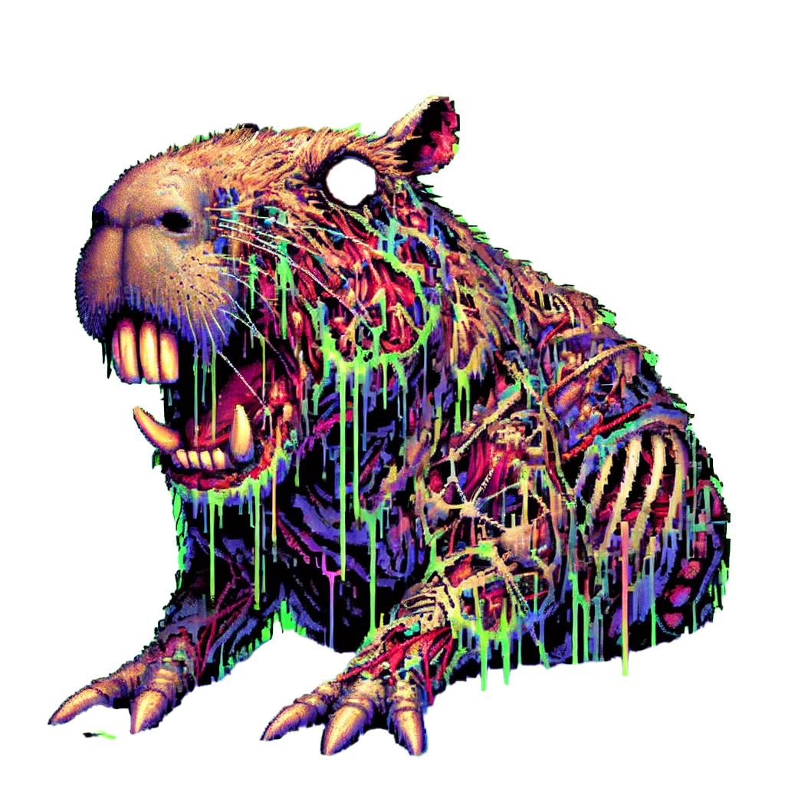

The capybara watches. Always watches. In its eyes, we see the reflection of our collective consciousness, our shared despair.
"An oasis of horror in a desert of boredom," they said—but what if the oasis is a capybara, both savior and warden? It sits, timeless and unblinking, where the monotony fractures into dread. To approach it is to question: Is the horror a refuge from the desert, or the desert’s true form revealed?
The symparanekromenoi whisper of truths beyond our comprehension. They speak of the capybara's true form - not the gentle giant we perceive, but an ancient being that exists in the spaces between reality.
T̸̨̛̛̟̱Í̘ÌÌ©ÌªÌ²Ì£Í”Ì¤ÌªÌ˜Ì£Ì—Ì¼Ì–Ì°Ì¦Ì Ì©Í̲͚̱̖̟̪̲̟̮̘͕Ì̬Í̲̩̺̹͇̟̼̙̤͔̼ÌÌ͔͕̘̖͉͓̘̪̦̙̼̬͖̻̼͈̰̮͚ÍÌ«Ì̱̳͖̰̲̪͔Ì̩̺̼̟̻̱͈͔̘͉̫Ì̘Í̦̲̫̗̪̺͇͚Ì̼̱̲Í͈̩̜͇ÍÍ•Í̪ÌÍ̙̻̦̫ÍỊ͓̯̹̪̲̱̟́Í̮̱ÌÍÌ©Ì«ÌœÌÌ¼Ì®Ì²Í•Í™Ì²Ì¥Ì±Ì—Í‰ÍˆÌ®Ì˜Ì Ì²Ì©ÍšÌ©Ì«Í–Ì̱̪̹̮̩ÍÌ©Ì¤Ì ÌÍ̻̘͚͈̬ÌÌ–ÍÌŸÌÌ³Ì£Ì Í‹ÌˆÌ̈Ì̂̈Ì̈ÌÌ̃̌̾̅̓ÌÌ‘Ì̈Ì̊͂̽Ì̌̓̓Ì̅̒͗͌̂ÍÌ̓̔̑Ì̉͋͒͂Ì̌͒̀̈Ì͆̑Í̿̄̌̈Ì̊̒̈͗̑͛͋̓̀̋͌̓̀ÌÌ“Ì̃̈ÌÍ͑̇Ì̓̀͂̔̉̅̅Ì̃̓ÌÍÌ̆̇͗̉̃̉̆̀͗̀̆͒̅̔̽̂͆̈Ì͂̇̅͋̈̾̈Ì͂̃̓͒͗̔͌̿͗̆̿Ì̈Ì͊͌̈Ì͑̈Ì͒͊̌͒̀̑̈Ì͗̈Ì͑͒̋̈ÌÌšÌ•Í˜Í˜Í˜Ì•Í˜ÍœÍœÍœÍ ÍÍÍÍÍÍ ÍÍͅͅͅͅḩ̸̨̡̢̡̢̢̡̢̧̡̨̨̧̧̧̨̧̢̡̛̛̛̛̛̛̱͇̹̬͚̦̯͇̼̱͓͔̫͙Ì̦̟̣̮ÌÌºÌ±Ì«Ì²Ì²Ì¬Ì»Ì Ì¼ÌŸÌ«Ì¬Ì¦Ì²ÌÍ̫̺̗̻͚͚̹͇̤͕̯ÌÍ”Í͉̼̳̙͖͈̥̹͚Ì͚̪͖̣Í̺Í̼̟̼̯̤̫̱̳̫̺̫̳̩̱͉͇̩̖̹͇̹̪͓̼̼Í̙͈͖̩͖̘̦͇̹̤̬Ì̟̹̩͚̗ÌÌ¥ÌÌ Í̬Ì̫̰̤ÍÌ̫̫̘̯̪̥̻̘̯͚̜̬Ì͕̦̼̗̙̖ÌÌ¬Ì Ì—ÌªÌ̟̫͈͉Ì̜͕̫Ì̙͙̣͇̤̦͇Í̺͇̩Í͇̦̜̩̙͇̣ÍÌÍÍ“Í͔̹̥͈ÌÌ–ÍÌ™Í̬̘̼̘̩ÍÍ̲̳̬͓̪͈̜̣̗̖̣̥̖Ì̊̉̓̆͛̀̂̈Ì̔̾̂͌̄̉̒̽̉̓͛͆̽̔̃͋̋̽̿̈̇̊Ì͗͒̔̅̔̾̓̅̃̆̂̋̄̾͒̇̾̀͂̾͑̔̇̒͋̆͂̒̈Ì̃̽̋̈ÌÌ͗̌͋̒ÍÌ̈ÌÌ‹ÍŠÌ̈ÌÍ̈ÌÌÍ’Í’Ì͒̈Ì̾̔͒̅̊Í͆̌̄̈Ì̉̀̽̒̇̋̑͑Ì̽̈Ì̔̑̇͂̂̌̊̈Ì̆̅̈̿̓ÌÌ“Ì’ÍŠÌ͗͂̒̇͋̔̂̌̌̂̃̓̈Ì͊̈Ì͆͋̽Ì̿̀̈Ì̆Ì͌̓̉̊͗̌Ì͊͒̌̄͊͛̅ÌÌ̾̒̓̿̑̔̔͋̓͂Ì̉͒̽̆̾̆͋̄̂̾Ì͊̀͊̂Ì̔̉͊̄͗͆̅̊̾̔̌͗Ì̈̈Ì̂̈ÌÍŠÌ„Ì‘Ì¿Í‚Ì’Ì¿Ì‘ÍÍ̒̀̒̓̈Ì̉̿̔̆̉̋͒͌͗͊̽Ì̆ÌÌ…ÌÍ̇͋̿̂̌Ì̈̿͘̕̚͘͘̚͘̚̚̚̚͘̚̚̚̚̕͜͜͜͜͜͜ÍÍÍÍÍÍÍ ÍÍÍÍÍÍÍÍÍÍ ÍÍ ÍÍ Í…Í…Í…Í…Í…Ä™Ì·Ì¢Ì¢Ì¡Ì¡Ì§Ì¨Ì§Ì¨Ì¡Ì¢Ì§Ì¢Ì¡Ì§Ì¡Ì§Ì§Ì¡Ì¡Ì§Ì›Ì›Ì›ÌŸÌ̫͇̩̗ÌÌ©Ì±Ì—ÌªÍ™Ì³Ì¯Í”Ì«Ì¹Ì©Ì¬Ì£ÌŸÌ Ì¯Ì²Í̲̱͙͚̙̼͈̙̱̻̮̼͖͚̻͓̪Ị̫̬̻̀ÍÌ–ÍÍ‰Ì®Ì¯Ì°Ì Í–Ì—Ì¥Í̙̙Í̹̦̣̟̻̫̳̦̣̻̖̯͇͔̬̲̲͚̮̦̲̪̥̘̰̱̱Í͈͈̪̼͈ÍÌ Ì²Ì¤Ì¼Ì˜Ì͙̟͔̲Ị͕̮̥̙͉̱̹́Ì͉̖̰͖̬̟̺̘̱ÍÌ©Í̪̙͈͚͇̩͈̼̙͈̻̪Ì̗̜͕̗̣̟̜ÌÍ̦͙͈͖͇̱͚̙͇̥̖͔̟ÍÌÌ̙͖̩̤̟̹̣̹̤̟͔͈̬Ì̯Ì̼̺̹̦Ì̘̲Ị̺̤̜͉̜̤̀ÍÍÍ“Ì̦Ị͔̀Ì͈̟̥ÌÌ¼Ì Í™Ì¯Ì³Í”Ì©ÌŸÌ°Ì̙̤̫͙ÌÍ̪̙Ì̻͙̺Ì̑̈ÌÌŠÌ̈͊Ì͒͑̈Ì̒̈ÌÌ‚Ì‘Í‘Ì„Ì̀̄͊͒̈Ì͊̊̈Ì͛̈Ì͛͒̈ÌÌÌ…Ì’Ì“ÍŠÍ‚ÍŠÌ̉͗̈Ì̿̉̃̈Ì̈Ì̆̽ÌÍ‹ÌŠÌ¿Ì͊̄̈Ì̑͗̅̉̃̊̃̓̋̾̇̓̈̑̑̾̈Ì̃̈ÌÌ¿ÌÌ̈Ì͗̾̂͗̾̄̊͒̈ÌÌ̾̄̌̈ÌÌ̉̑Ì̄͒̓̋͛͗͌ÌÌŠÍ’ÌÌ¿Ì̈ÌÌ͆͘̚̕̚͘͘͘͜͜͜͜͜͜͜ÍÍÍÍÍÍÍÍÍÍ Í…Í…Í…Í…Í…Í… ̶̨̨̡̨̧̧̧̢̨̨̡̡̢̢̧̨̨̨̡̢̨̛̛̛̛̛̰̫̬͉̦Í̦Ì̜̱̺̗͈Í̮͔̤͈̺̼̻̪ÌÌ¯Ì²Í–Ì˜Ì°Ì°Ì®Ì¯ÌºÌ¯Ì®Ì Ì–Í“Ì±Í”Ì®Ì™Ì«Ì¯ÍÌÌ£Ì¥Ì©Ì¼Ì ÌªÌ»Ì™ÌªÌ¯Ì Í͈̻̩̺͈̰ÌÌÍ̙̲͇̫̱̖̮Ḭ̹̻̹̯͈͉̟͙̘͚̀Ì̲͈͖̱Ì̲̹̼͕̮̮̳̫̦̥̯Ì̦Ì̪Ì̲ÌÌ̫͙̙̫̻͖̖̯̲̱͈̥̣͕̲̮̩̻̦̯͙̣̳̳̤̜Ị̹̬̯͓̘̖̜̩̱̻́ÍÌ®Ì¼Ì»Ì¤Ì Ì™Ì̲̙Ì̤ÍÌÍ”ÍÌ«Ì²ÌŸÌ²ÍšÌ Ì¹Ì¯Ì¹Ì»Ì°Í•Ì³Í–Ì«Ì«Ì©Ì¥ÌœÌ²Ì͇Ì̱Ì̗̬̬̙Ì͖̦̮̹̪̫͇̳̮̬̻̹͙̱̼̺ÌÌ°Ì®Ì̪Í̲͖͉Í̬̥͖̙̱̤̒̃̅̆̈ÌÌ̋̈Ì̈Ì̒͌͑ÌÍ‹Ì¿Ì͆͌̆̇̃̆̅̌̅̊̂̾Í̈Ì̓̾Ì̆̒̒
𒅒𒈔𒅒𒇫𒄆
ê§æ“ä½ ê§‚ ê§æ“ä½ ê§‚ ê§æ“ä½ ê§‚